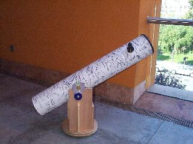

SJAA
Ephemeris
|
SJAA Ephemeris |
Music of the Spheres at Lick ObservatoryMike Koop |
Lick Observatory's Music of the Spheres and the Summer Visitors Program websites have been updated with the dates for the 1999 season. Tickets will be available through the UCSC Box office. Remember that tickets quickly sell out for all the events. There is also a challenge pledge for renovation of the 36" dome. If $25,000 can be raised before June 1st, 1999 then the Barkley Foundation will match the sum. It's interesting to note that the Music of the Spheres concerts are on New Moon weekends while the Summer Visitor's Program is on the First Quarter Moon weekends. For more information see Music of the Sphere's website: www.snapnet.com/HVAG/resources/lick/music/ or Summer Visitor's Program Website: www.snapnet.com/HVAG/resources/lick/svp/svp.html.
Music of the Sphere's 1999 Schedule A, benefit concert, followed by a Lecture, and viewing through the 36" Telescope
Date: July 9th Music by: Golden Bough, Tales interwoven with unique renditions of Celtic songs. Lecture by: Alex Filippenko Titled: Einstein's Biggest Blunder? The Case for Cosmic Antigravity
Date: July 10th Music By: Yiannis Chronopoulos and the Spartans, traditional and contemporary Greek music. Lecture by: Raja Guhathakurta Titled: The Universe of Galaxies
Date: August 6th Music by: Clairdee , Pianist Ken French with vocalist Clairdee Lecture By: Burt Jones Titled: Cosmic Catastrophes
Date: August 7th Music By: Susan Craig Winsberg and Friends: Celtic traditional Music featuring flutes and whistles Lecture By: Mike Bolte Titled: The Age of the Universe
Date: September 10th Music By: Into the Woods: Woodwind chamber music in classical and jazz styles. Lecture By: Steve Vogt Titled: The Search for Extra-Solar Planets
Date: September 11th Music By: Great Guitars! Daniel Roest hosts an evening of guitar magic Lecture By: Douglas Lin Titled: The Genesis of Planetary Systems
Summer Visitor's Program Dates: Viewing through both the 36-inch refracting telescope and 40-inch reflecting telescope with Astronomy and History Lecture June 18, June 19, July 16, July 17, August 13, August 14
|  |
| Mike Koop; last updated: February 05, 2002 | Prev Next |